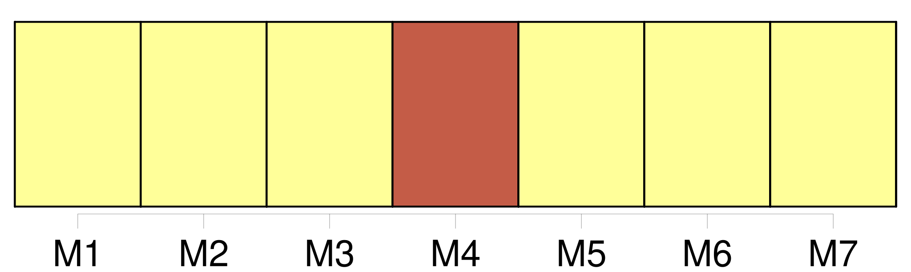
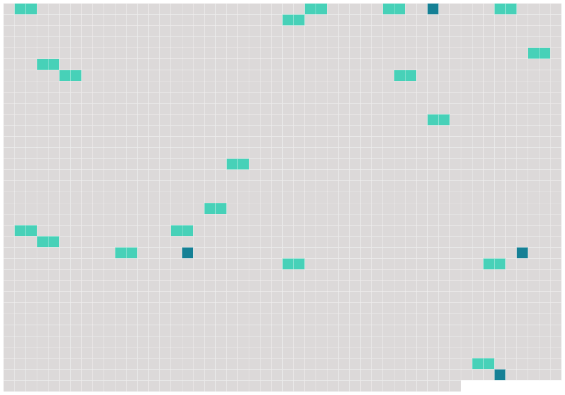

Longueur nb maillons : 23 mentions |
  |
De [l'adoption] et de la tutelle officieuse. [3 phrases]
De [l'adoption] [1 phrases]
De [l'Adoption] et de [ses] effets. [1 phrases]
[L'adoption] n'est permise qu'aux personnes de l'un ou de l'autre sexe, âgées de plus de cinquante ans, qui n'auront à l'époque de [l'adoption] , ni enfans ni descendans légitimes, et qui auront au moins quinze ans de plus que les individus qu'elles se proposent d'adopter. [5 phrases]
Il suffira, dans ce deuxième cas, que l'adoptant soit majeur, plus âgé que l'adopté, sans enfans ni descendans légitimes ; et s'il est marié, que son conjoint consente à [l'adoption] [1 phrases] [L'adoption] ne pourra, en aucun cas, avoir lieu avant la majorité de l'adopté.
Si l'adopté, ayant encore ses père et mère, ou l'un des deux, n'a point accompli sa vingt-cinquième année, il sera tenu de rapporter le consentement donné à [l'adoption] par ses père et mère, ou par le survivant ; et s'il est majeur de vingt-cinq ans, de requérir leur conseil. [1 phrases]
[L'adoption] conférera le nom de l'adoptant à l'adopté en l'ajoutant au nom propre de ce dernier. [5 phrases]
L'adopté n'acquerra aucun droit de successibilité sur les biens des parens de l'adoptant ; mais il aura sur la succession de l'adoptant les mêmes droits que ceux qu'y aurait l'enfant né en mariage même quand il y aurait d'autres enfans de cette dernière qualité nés depuis [l'adoption] [6 phrases]
Des Formes de [l'Adoption] [9 phrases]
Après avoir entendu le commissaire du Gouvernement, et sans aucune autre forme de procédure, le tribunal prononcera, sans énoncer de motifs, en ces termes : Il y a lieu, ou Il n'y a pas lieu à [l'adoption] [1 phrases]
Dans le mois qui suivra le jugement du tribunal de première instance, ce jugement sera, sur les poursuites de la partie la plus diligente soumis au tribunal d'appel, qui instruira dans les mêmes formes que le tribunal de première instance et prononcera, sans énoncer de motifs : Le jugement est confirmé ou Le jugement est réformé ; en conséquence, il y a lieu où il n'y a pas lieu à [l'adoption] [1 phrases]
Tout jugement du tribunal d'appel qui admettra [une adoption] , sera prononcé à l'audience, et affiché en tels lieux et en tel nombre d'exemplaires que le tribunal jugera convenables. [1 phrases]
Dans les trois mois qui suivront ce jugement, [l'adoption] sera inscrite, à la réquisition de l'une ou de l'autre des parties, sur le registre de l'état civil du lieu où l'adoptant sera domicilié.
Cette inscription n'aura lieu que sur le vu d'une expédition, en forme, du jugement du tribunal d'appel ; et [l'adoption] restera sans effet si [elle] n'a été inscrite dans ce délai. [1 phrases]
Si l'adoptant venait à mourir après que l'acte constatant la volonté de former le contrat d' [adoption] a été reçu par le juge de paix et porté devant les tribunaux, et avant que ceux -ci eussent définitivement prononcé, l'instruction sera continuée et [l'adoption] admise s'il y a lieu.
Les héritiers de l'adoptant pourront s'ils croient [l'adoption] inadmissible, remettre au commissaire du Gouvernement tous mémoires et observations à ce sujet. [18 phrases]
Si, à la majorité du pupille, son tuteur officieux veut l'adopter, et que le premier y consente, il sera procédé à [l'adoption] selon les formes prescrites au chapitre précédent, et les effets en seront, en tous points, les mêmes. [1 phrases]
Si, dans les trois mois qui suivront la majorité du pupille, les réquisitions par lui faites à son tuteur officieux, à fin d' [adoption] , sont restées sans effet, et que le pupille ne se trouve point en état de gagner sa vie, le tuteur officieux pourra être condamné à indemniser le pupille de l'incapacité où celui -ci pourrait se trouver de pourvoir à sa subsistance. |
 |
La ressource peut être téléchargée sur la page Ortolang
Si vous avez des questions ou vous voyez des erreurs, merci d'envoyer un mail à silvia.federzoni89@gmail.com
Site développé par S. Federzoni (contact)